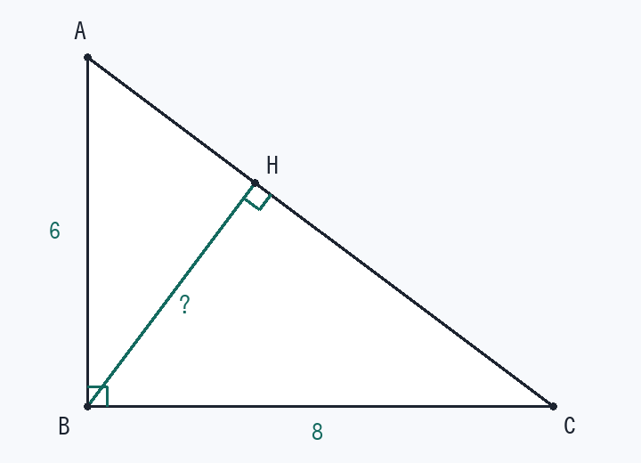

第2回 三平方の定理と、面積2通りで垂線を出す
∠B = 90°、AB = 6、BC = 8 の直角三角形 ABC で、B から AC におろした垂線の足を H とする。BH の長さを求めよ。

解法の型
斜辺に垂線がおりている図を見たら、面積を2通りで表す。
相似で比を立てても解けますが、面積2通りのほうが速く、ミスが少ないです。
解答手順
- 三平方の定理で斜辺AC² = 6² + 8² = 100 → AC = 10
3 : 4 : 5 の3倍。この比は暗記しておきます。
- 面積その1（直角をはさむ2辺）S = ½ × 6 × 8 = 24
- 面積その2（斜辺を底辺に見る）S = ½ × AC × BH = ½ × 10 × BH
- 等号でつないで解く½ × 10 × BH = 24 → BH = 24/5 = 4.8
検算：垂線は「いちばん短い距離」なので BH < AB = 6、BH < BC = 8 を満たすはず。4.8 は両方より小さく、斜辺の半分 5 より少し小さいという感覚とも合います。
覚えるべきこと（在庫に入れる1行）
斜辺への垂線 → 面積2通り → 方程式
類題（翌日、何も見ずに）
- ∠B = 90°、AB = 5、BC = 12 のとき BH
答え
AC = 13、S = 30 より ½·13·BH = 30、BH = 60/13
- ∠B = 90°、AB = 3、BC = 3 のとき BH
答え
AC = 3√2、S = 9/2 より BH = 3/√2 = 3√2/2
- 3辺が 6, 8, 10 の三角形で、長さ10の辺を底辺としたときの高さ
答え
直角三角形なので同じく 4.8